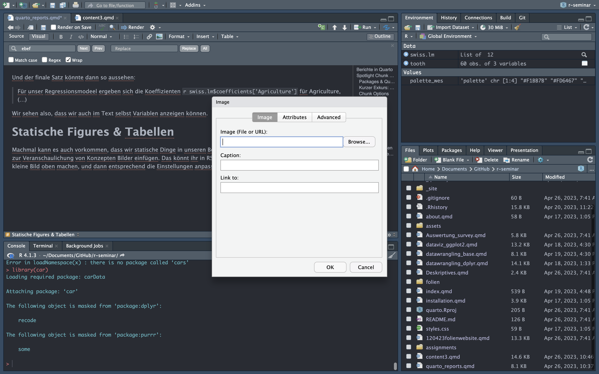

iris %>%
group_by(species) %>%
summarise(n=n())Communicate
Einleitung
Wir haben nun kennengelernt, wie wir mit Hilfe statistischer Analysen Daten mit R auswerten können. Dabei haben wir die Ergebnisse direkt in R ausgewertet - im Output der jeweiligen Chunks. Doch was ist, wenn dir unsere Ergebnisse mit anderen teilen wollen? Nicht jede:r hat R & R-Studio installiert, und kann ganz einfach unsere .qmd Dateien öffnen. Daher ist es wichtig, sich mit dem Bereitstellen von wissenschaftlichen Ergebnissen zu beschäftigen.
Zwar haben wir in der ersten Sitzung kurz kennengelernt, wie Quarto mit seinen Chunks & HTML Output funktioniert, diese Sitzung soll allerdings dazu dienen, dieses Wissen zu festigen. Dabei wollen wir verschiedene Möglichkeiten zeigen, wie wir Ergebnisse in verschiedener Art und Weise vermitteln können. Dabei ist die Art der Darbietung, auf die wir uns fokussieren html. Zwar ist der Export in .docx und .pdf ebenfalls möglich, diesen wollen wir aber euch aber nur zum Schluss kurz zeigen.
Quarto Berichte
Quarto Berichte (.qmd) Dateien geben uns eine Vielzahl von Möglichkeiten zur Anpassung des Berichts. Dazu gehören zum einen die verschiedenen Anpassungsmöglichkeiten für Chunks, außerdem aber die Texte zwischen den Chunks und natürlich weitere Sachen wie Tabellen, Grafiken & Verlinkungen.
Knitr & Packages
Intern werden Quarto-Dokumente über die knitr Engine gerendert. Die genauen Hintergründe sind an dieser Stelle erstmal nicht so relevant. Wichtig ist jedoch zu verstehen, was wir beim Rendern beachten müssen. So stellt sich zunächst die Frage:
Frage
Inwieweit können die Berechnungen der einzelnen Chunks beim Rendern auf das Environment zugreifen?
Wenn wir einen Datensatz einlesen oder ein Package aktivieren, so machen wir das einmalig pro Session, müssen es dann aber für jede Session erneut tun. Wenn wir ein Quarto Dokument rendern, dann entsteht quasi ein neues Environment, welches nur für das Rendern relevant ist. Mit anderen Worten: Quarto greift beim Rendern nicht auf das vorhandene Environment zu, sondern wir müssen explizit machen, was benötigt wird. In diesem Sinne sind die Quarto-Dokumente dann auch selbsterhaltend. Zur Veranschaulichung ein Beispiel:
Angenommen, wir haben im dritten Chunk folgende Berechnung gemacht:
Frage
Wenn wir weiterhin nichts beachtet haben, was könnte passieren?
Error: could not find function “%>%”Richtig, es gäbe zwei Fehler: Einen, weil iris womöglich noch nicht eingelesen wurde und einen weiteren, weil die Funktion %>% nicht gefunden wurde (dplyr bzw. tidyverse wurde nicht aktiviert). Es bietet sich daher also an, was wir schon in Kapitel Packages & Help angesprochen haben: Die Struktur des Dokuments richtig anlegen:

Wenn wir gleich zu Beginn einen Chunk mit allen benötigten Packages & Imports anlegen, so gibt es später keine Probleme. So ein Chunk könnte so aussehen:
library(tidyverse)
metro_colors <- c("#fccc0a","#ff6319","#ee352e","#b933ad","#00933c","#0039a6","#996633","#000000")
iris <- read_csv("assets/datasets/iris/iris.csv")Chunks
Chunk-Optionen
Wir haben bereits kurz kennengelernt, was die Optionen zu Beginn eines Chunks (bspw. #| eval: false ) bewirken. Das wollen wir uns nun nochmal genauer anschauen, indem wir die einzelnen Optionen beleuchten. Die grundsätzliche Syntax ist folgende:
#| option: parameter
Diese Zeile muss zu Beginn eines Chunks stehen. Denkt an das Leerzeichen zwischen option und parameter. In den meisten Fällen schlägt R-Studio aber auch etwas entsprechendes vor. Natürlich können wir mehrere dieser Optionen kombineren (als einzelne Zeilen).
Hinweis
Bei den meisten Optionen geben wir hier false als parameter an. Wir könnten natürlich auch true oder andere Werte angeben (je nach Option), aber bspw. bei eval ist true die Default Variante - es würde also nichts ändern.
#| eval
Wenn wir einen Chunk samt Code grundsätzlich behalten, ihn aber beim Rendern nicht unbedingt ausführen wollen (bspw. weil er einen Fehler wirft den wir auf die Schnelle nicht lösen können), bietet sich die eval Option an.
#| eval: false Hier gibt es die Möglichkeiten true und false.
#| output
Wenn die Sichtbatkeit des Outputs des Chunks beeinflussen wollen so verwenden wir die output Option:
#| output: false Der Code wird hierbei unabhängig der Optionen ausgeführt. Hier gibt es die Möglichkeiten true, false und asis. Bei asis wird der Output als rohes Markdown behandelt. Das kann bei manchen Anwendungsfällen nützlich sein.
#| include
Wenn wir wollen, dass weder Code noch Ergebnisse sichtbar sind, verwenden wir die include Option mit false:
#| include: false #| warning
Oft kommt es bei der Aktivierung von Packages (oder bspw. beim Import von Dateien über read_csv(x) vor, dass wir eine Meldung von R bekommen, welche als warning fungiert und dann auch im gerenderten Dokument auftraucht. Wenn wir das nicht wollen, so nutzen wir:
#| warning: false Hier gibt es die Möglichkeiten true und false.
#| error
Ebenso können wir Fehlermeldungen unterdrücken:
#| error: false Hier gibt es die Möglichkeiten true und false.
Hinweis
Hier ist wichtig zu wissen dass Fehler, welche den Code unterbrechen, diesen trotzdem unterbrechen werden.
Chunk Namen
Bei größeren Dokumenten kann man schnell den Überblick verlieren. Wir können die Chunks allerdings auch explzit benennen. Dies funktioniert so:
{r name_of_chunk}Wir sehen, wenn wir zu Beginn gleich in die Chunk-Definition zwischen den geschwungenen Klammern { } und hinter das r (mit dem wir übrigens die Programmiersprache des Chunks definieren, Python ist auch möglich) einen Namen hinzufügen, so können wir den Chunk benennen. Das hilft vor allem bei späterer Zuordnung, bspw. wenn es um Fehlermeldungen geht.
Tipp
Chunks zu benennen kann besonders nützlich sein, wenn es um Fehlermeldungen geht: Hier gibt es häufig bei Problemen lediglich den Output von R: error occurred in unnamed-chunk-128 (…). Wenn ihr die Chunks bennent, ist es hier leichter, den Fehler wiederzufinden.
Globale Optionen
Zu Beginn eines jeden Quarto Dokuments befindet sich der sogenannte YAML-Header (YAML ist ein rekursives Akronym für „YAML Ain’t Markup Language“ bzw. eigentlich „Yet Another Markup Language“). Hier werden Autor:in und Titel definiert, es können aber auch weitere Optionen gesetzt werden. Schauen wir uns am besten kurz ein Beispiel an:
---
title: "Analysis"
author: "Simon Krukowski"
format: html
output: false
df-print: paged
---Wir sehen, dass wir Chunk Optionen wie output: false auch global für alle Chunks anwenden können, indem wir die entsprechende Option ebenfalls in den YAML-Header schreiben.
Weiterhin ist die df-print Option von Interesse. Diese bestimmt, wie Dataframes dargestellt werden und hat die Optionen default, kable, tibble oder paged.
Im Fall dieses Dokuments ist die Einstellung paged, da wir hier das Dataframe schön als interaktives Element angezeigt bekommen:
irisDarüber hinaus gibt es eine Vielzahl weiterer Optionen, die ihr auf quarto.org nachlesen könnt.
Markdown
Wenn wir zwischen Chunks etwas erklärendes schreiben, so lässt sich dieser Text über Markdown formatieren. Markdown ist eine vereinfachte Auszeichnungssprache, dessen Syntax sehr simpel ist.
Im Visual Mode von R-Studio können wir allerdings die meisten dieser Einstellungen per GUI einstellen, wie bspw. hier:

Wir sehen, dass wir Dinge wie bold, italic oder auch Stichpunkte sowie viele weitere Dinge direkt per GUI einfügen können.
Syntax
Trotzdem ist es sinnvoll, die Markdown Syntax kennenzulernen. Hier die zentralen Elemente:
| Funktion | Syntax | Beispiel |
|---|---|---|
| Bold | **Beispiel** |
Beispiel |
| Italic | *Beispiel* |
Beispiel |
| Bolditalic | ***Beispiel*** |
Beispiel |
| Hochstellen/Runterstellen | Beispiel^2^ / Beispiel~2~ |
Beispiel2 / Beispiel2 |
| Code | `Beispiel` |
Beispiel |
| Durchgestrichen | ~~Beispiel~~ |
|
| Überschrift 1 | # Beispiel |
Beispiel |
| Überschrift 2 | ## Beispiel |
Beispiel |
Aufgabe
Probiert mit der Syntax herum und schreibt einen Text, in dem ihr von den verschiedenen Optionen Gebrauch macht.
Figures
Wir haben auch die Möglichkeit, Bilder einzufügen. Hierbei geht es dann meistens um statische Bilder, d.h., keine Plots o.Ä., welche durch Berechnungen automatisch beim Rendern entstehen. So könnte man bspw. zur Veranschaulichung von Konzepten Bilder einfügen. Das könnt ihr in RStudio ganz einfach im Visual Editor über das kleine Bild oben machen, und dann entsprechend die Einstellungen anpassen (die Grafik hier wurde natürlich über Quarto/R-Studio eingebettet):

Die Einstellungen, die ihr per GUI bestimmt, werden eigentlich nur übernommen und in Markdown Code überführt, im obigen Fall bspw:
{width="500"}
Tabellen
Manchmal kann es auch vorkommen, dass wir Tabellen haben, die wir gar nicht dynamisch erstellt haben, sondern die wir manuell eingeben wollen. Dafür müssen wir natürlich nicht extra ein R-Objekt erstellen, welches wir dann darstellen, sondern wir können es nach folgender Syntax direkt im Text-Teil in Quarto eingeben. Die Syntax sieht wie folgt aus:
| default | left-aligned | right-aligned | centered |
|---------|:-----|------:|:------:|
| student1| 12 | 12 | 12 |
| student2| 123 | 123 | 123 |
| student3| 1 | 1 | 1 |
: Table 1: table description Über den : Operator könnt ihr bspw. das alignment innerhalb der Zellen angeben. Solch eine Markdown-Table Syntax kann bspw. über R-Studio oder Online Editoren erstellt werden.
So sieht das Ganze dann aus:
| default | left-aligned | right-aligned | centered |
|---|---|---|---|
| student1 | 12 | 12 | 12 |
| student2 | 123 | 123 | 123 |
| student3 | 1 | 1 | 1 |
Zitationen
Wir können auch direkt in Quarto zitieren, bspw. wenn wir den Ursprung unserer R-Datenanalyse Pipeline demonstrieren wollen. Dazu brauchen wir nur eine Bibliographie, die wir als .bib vorliegen haben, und dann so einbetten:
(...)
df-print: paged
bibliography: "assets/bibliographies/references.bib"
---Dann noch über das @ deutlich machen: Wickham, Çetinkaya-Rundel, and Grolemund (2023) und voila! Ein Literaturverzeichnis erstellt sich ebenfalls.
Nützliche Funktionen
Hier noch ein paar nützliche Funktionen, die für das grundlegende Verständnis von Communicating vielleicht nicht unbedingt relevant sind, aber die wir trotzdem nicht vorenthalten wollen.
Nützliche Funktionen
In-Text Variablen
Manchmal wollen wir im Fließtext Ergebnisse beschreiben, dabei aber flexibel bleiben und diese nicht “fest” in den Text schreiben. Auch das ist mit Quarto möglich. Angenommen, wir wollen den Koeffizient für Agriculture unseres eben gerechneten Regressionsmodells im Text beschreiben:
swiss.lm <- lm(Fertility ~ Agriculture + Examination + Education + Catholic, swiss)Über `r ` können wir (im Source Editor) in-Text ausführbaren Code integrieren. Die R-Syntax, um an den Wert zu bekommen, ist folgende:
swiss.lm$coefficients['Agriculture']Agriculture
-0.2206455 Wenn wir dies nun über die oben beschriebene Syntax mit `r ` benutzen, könnte ein finaler Satz am Ende der Analyse so aussehen:
Für unser Regressionsmodell ergeben sich die Koeffizienten -0.22 für Agriculture, (…)
Die -0.22 ist dabei dynamisch generiert.
Publikationsbereite Outputs
Manchmal wollen wir direkt aus R unsere Outputs in einem Format haben, das quasi publikationsbereit ist. In Abhängigkeit des wissenschaftlichen Hintergrundes gibt es da natürlich verschiedene Guidelines, wir orientieren uns hier an den APA Guidelines.
Angenommen, wir haben einen Datensatz wie ToothGrowth und wollen diesen im deskriptiven Teil unserer Forschungsarbeit berichten. Je nachdem, was wir in df-print definiert haben, könnte so ein table zwar in Ordnung aussehen:
ToothGrowthSo richtig optimal ist das aber nicht. Hier kann das stargazer package sehr hilfreich sein. Schauen wir uns eine solche Tabelle für das attitude dataset an. Dabei ist die Chunk-Option #| results: asis relevant.
stargazer::stargazer(attitude,type = "html")| Statistic | N | Mean | St. Dev. | Min | Max |
| rating | 30 | 64.633 | 12.173 | 40 | 85 |
| complaints | 30 | 66.600 | 13.315 | 37 | 90 |
| privileges | 30 | 53.133 | 12.235 | 30 | 83 |
| learning | 30 | 56.367 | 11.737 | 34 | 75 |
| raises | 30 | 64.633 | 10.397 | 43 | 88 |
| critical | 30 | 74.767 | 9.895 | 49 | 92 |
| advance | 30 | 42.933 | 10.289 | 25 | 72 |
Über die Option summary = FALSE können wir Summaries ausschalten, bspw. wenn wir eh eine Ergebnistabelle aus einem T-Test haben:
ToothGrowth %>%
mutate(dose = as.factor(dose)) %>%
t_test(len ~ supp,var.equal = TRUE) %>%
stargazer::stargazer(type = "html",summary = F)| .y. | group1 | group2 | n1 | n2 | statistic | df | p | |
| 1 | len | OJ | VC | 30 | 30 | c(t = 1.91526826869527) | c(df = 58) | 0.0604 |
Und was ist mit komplexeren Modellen oder Regressionen? Hier kann die manuelle Darstellung sehr aufwändig sein. Aber auch hier lässt uns stargazer nicht im Stich. Schauen wir uns den Output für unsere swiss Regression an.
swiss.lm %>% stargazer::stargazer(type="html")| Dependent variable: | |
| Fertility | |
| Agriculture | -0.221*** |
| (0.074) | |
| Examination | -0.261 |
| (0.274) | |
| Education | -0.962*** |
| (0.195) | |
| Catholic | 0.124*** |
| (0.037) | |
| Constant | 91.055*** |
| (6.949) | |
| Observations | 47 |
| R2 | 0.650 |
| Adjusted R2 | 0.616 |
| Residual Std. Error | 7.736 (df = 42) |
| F Statistic | 19.482*** (df = 4; 42) |
| Note: | p<0.1; p<0.05; p<0.01 |
Fazit & Nächste Sessions
In den letzten Sessions haben wir einiges über R gelernt. Wir haben gelernt, wie die Syntax von R überhaupt funktioniert. Wir können nun Daten auf verschiedenste Weise importieren, können die Daten bereinigen und so transformieren, dass wir sie für unserer Analysen gebrauchen können. Das können wir sowohl mit Base-R als auch mit tidyverse. Wir können auch schnell eine Idee von unseren Daten bekommen, und diese durch Visualisieren noch mehr verfeinern. Das Ganze nutzen wir dann, um über inferenzstatistische Verfahren unsere Daten zu modellieren und Aussagen bzgl. unserer Forschungsfragen zu generieren. Zuletzt haben wir noch in dieser Session gelernt, wie wir das dann kommunizieren.

Diese verschiedenen Punkte der Pipeline kommen nun zusammen, und wir werden sie benötigen um in den kommenden Sessions mit Hilfe von R verschiedene Datensätze aus dem Lehr-Lernbereich zu untersuchen. Dabei werden wir immer wieder auf Hindernisse stoßen, zu denen wir dann gemeinsam Lösungsansätze erarbeiten um noch mehr über R kennenzulernen. Los gehts!
References
Wickham, Hadley, Mine Çetinkaya-Rundel, and Garrett Grolemund. 2023. R for data science: import, tidy, transform, visualize, and model data. 2nd edition. Beijing Boston Farnham Sebastopol Tokyo: O’Reilly.